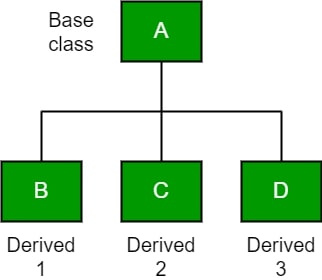

Inheritance is an important pillar of OOP(Object-Oriented Programming). It is the mechanism in java by which one class is allowed to inherit the features(fields and methods) of another class. In Java, inheritance means creating new classes based on existing ones. A class that inherits from another class can reuse the methods and fields of that class. In addition, you can add new fields and methods to your current class as well.
Inheritance in Java: Why do we need it?
Code Reusability: The code written in the Superclass is common to all subclasses. Child classes can directly use the parent class’s code.
Method Overriding: Method Overriding is achievable only through Inheritance. It is one of the ways by which java achieves Run Time Polymorphism.
Abstraction: The concept of abstract where we do not have to provide all details is achieved through inheritance. Abstraction only shows the functionality to the user.
Important terminologies used in Inheritance:
Class: Class is a set of objects which shares common characteristics/ behavior and common properties/ attributes. Class is not a real-world entity. It is just a template or blueprint or prototype from which objects are created.
Super Class/Parent Class: The class whose features are inherited is known as a superclass(or a base class or a parent class).
Sub Class/Child Class: The class that inherits the other class is known as a subclass(or a derived class, extended class, or child class). The subclass can add its own fields and methods in addition to the superclass fields and methods.
Reusability: Inheritance supports the concept of “reusability”, i.e. when we want to create a new class and there is already a class that includes some of the code that we want, we can derive our new class from the existing class. By doing this, we are reusing the fields and methods of the existing class.
How to use inheritance in Java?
The extends keyword is used for inheritance in java. Using the extends keyword indicates you are derived from an existing class. In other words, “extends” refers to increased functionality.
Syntax
class derived-class extends base-class
{
//methods and fields
{
Types of Inheritance in Java
1. Single Inheritance
In single inheritance, subclasses inherit the features of one superclass. In the image below, class A serves as a base class for the derived class B.
2. Multilevel Inheritance
In Multilevel Inheritance, a derived class will be inheriting a base class, and as well as the derived class also acts as the base class for other classe
3. Hierarchical Inheritance
In Hierarchical Inheritance, one class serves as a superclass (base class) for more than one subclass. In the below image, class A serves as a base class for the derived classes B, C, and D.
Output
Class A
Class B
Class A
Class C
Class A
Class D

4. Multiple Inheritance (Through Interfaces)
In Multiple inheritances, one class can have more than one superclass and inherit features from all parent classes. Please note that Java does not support multiple inheritances with classes. In java, we can achieve multiple inheritances only through Interfaces. In the image below, Class C is derived from interfaces A and B.
5. Hybrid Inheritance(Through Interfaces)
It is a mix of two or more of the above types of inheritance. Since java doesn’t support multiple inheritances with classes, hybrid inheritance is also not possible with classes. In java, we can achieve hybrid inheritance only through Interfaces.
Important facts about inheritance in Java
Default superclass: Except Object class, which has no superclass, every class has one and only one direct superclass (single inheritance). In the absence of any other explicit superclass, every class is implicitly a subclass of the Object class.
Superclass can only be one: A superclass can have any number of subclasses. But a subclass can have only one superclass. This is because Java does not support multiple inheritances with classes. Although with interfaces, multiple inheritances are supported by java.
Inheriting Constructors: A subclass inherits all the members (fields, methods, and nested classes) from its superclass. Constructors are not members, so they are not inherited by subclasses, but the constructor of the superclass can be invoked from the subclass.
Private member inheritance: A subclass does not inherit the private members of its parent class. However, if the superclass has public or protected methods(like getters and setters) for accessing its private fields, these can also be used by the subclass.